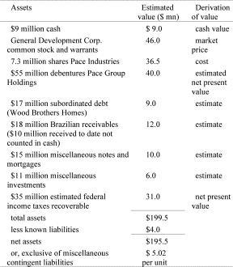

Investing in Corporate Liquidations
Some troubled companies, lacking viable alternatives, voluntarily liquidate in order to preempt a total wipeout of shareholders’ investments. Other, more interesting corporate liquidations are motivated by tax considerations, persistent stock market undervaluation, or the desire to escape the grasp of a corporate raider. A company involved in only one profitable line of business would typically prefer selling out to liquidating because possible double taxation (taxes both at the corporate and shareholder level) would be avoided. A company operating in diverse business lines, however, might find a liquidation or breakup to be the value-maximizing alternative, particularly if the liquidation process triggers a loss that results in a tax refund. Some of the most attractive corporate liquidations in the past decade have involved the breakup of conglomerates and investment companies.
Most equity investors prefer (or are effectively required) to hold shares in ongoing businesses. Companies in liquidation are the antithesis of the type of investment they want to make. Even some risk arbitrageurs (who have been known to buy just about anything) avoid investing in liquidations, believing the process to be too uncertain or protracted. Indeed, investing in liquidations is sometimes disparagingly referred to as cigar-butt investing, whereby an investor picks up someone else’s discard with a few puffs left on it and smokes it. Needless to say, because other investors disparage and avoid them, corporate liquidations may be particularly attractive opportunities for value investors.
City Investing Liquidating Trust
In 1984 shareholders of City Investing Company voted to liquidate. The assets of this conglomerate were diverse, and the most valuable subsidiary, Home Insurance Company, was particularly difficult for investors to appraise. Efforts to sell Home Insurance failed, and it was instead spun off to City Investing shareholders. The remaining assets were put into a newly formed entity called City Investing Liquidating Trust, which became a wonderful investment opportunity.
Table 2
Assets of City Investing Liquidating Trust at Its Inception, September 25, 1985

As shown in table 2, City Investing Liquidating Trust was a hodgepodge of assets. Few investors had the inclination or stamina to evaluate these assets or the willingness to own them for the duration of a liquidation likely to take several years. Thus, while the units were ignored by most potential buyers, they sold in high volume at approximately $3, or substantially below underlying value.
The shares of City Investing Liquidating Trust traded initially at depressed levels for a number of additional reasons. Many investors in the liquidation of City Investing had been disappointed with the prices received for assets sold previously and with City’s apparent inability to sell Home Insurance and complete its liquidation. Consequently many disgruntled investors in City Investing quickly dumped the liquidating trust units to move on to other opportunities. Once the intended spinoff of Home Insurance was announced, many investors purchased City Investing shares as a way of establishing an investment in Home Insurance before it began trading on its own, buying in at what they perceived to be a bargain price. Most of these investors were not interested in the liquidating trust, and sold their units upon receipt of the Home Insurance spinoff. In addition, the per unit market price of City Investing Liquidating Trust was below the minimum price threshold of many institutional investors. Since City Investing Company had been widely held by institutional investors, those who hadn’t sold earlier became natural sellers of the liquidating trust due to the low market price. Finally, after the Home Insurance spinoff, City Investing Liquidating Trust was delisted from the New York Stock Exchange. Trading initially only in the over-the-counter pink-sheet market, the units had no ticker symbol. Quotes were unobtainable either on-line or in most newspapers. This prompted further selling while simultaneously discouraging potential buyers.
The calculation of City Investing Liquidating Trust’s underlying value in table 2 is deliberately conservative. An important component of the eventual liquidating proceeds, and something investors mostly overlooked (a hidden value), was that City’s investment in the stock of Pace Industries, Inc., was at the time almost certainly worth more than historical cost. Pace was a company formed by Kohlberg, Kravis and Roberts (KKR) to purchase the Rheem, Uarco, and World Color Press businesses of City Investing in a December 1984 leveraged buyout. This buyout was profitable and performing well nine months later when the City Investing Liquidating Trust was formed.
The businesses of Pace had been purchased by KKR from City Investing in a financial environment quite different from the one that existed in September 1985. The interest rate on U.S. government bonds had declined by several hundred basis points in the intervening nine months, and the major stock market indexes had spurted sharply higher. These changes had almost certainly increased the value of City’s equity interest in Pace. This increased the apparent value of City Investing Liquidating Trust units well above the $5.02 estimate, making them an even more attractive bargain.
As with any value investment, the greater the undervaluation, the greater the margin of safety to investors. Moreover, approximately half of City’s value was comprised of liquid assets and marketable securities, further reducing the risk of a serious decline in value. Investors could reduce risk even more if they chose by selling short publicly traded General Development Corporation (GDV) shares in an amount equal to the number of GDV shares underlying their investment in the trust in order to lock in the value of City’s GDV holdings.
As it turned out, City Investing Liquidating Trust made rapid progress in liquidating. GDV shares surged in price and were distributed directly to unitholders. Wood Brothers Homes was sold, various receivables were collected, and most lucrative of all, City Investing received large cash distributions when Pace Industries sold its Rheem and Uarco subsidiaries at a substantial gain. The Pace Group debentures were redeemed prior to maturity with proceeds from the same asset sales. Meanwhile a number of the trust’s contingent liabilities were extinguished at little or no cost. By 1991 investors who purchased City Investing Liquidating Trust at inception had received several liquidating distributions with a combined value of approximately nine dollars per unit, or three times the September 1985 market price, with much of the value received in the early years of the liquidation process.